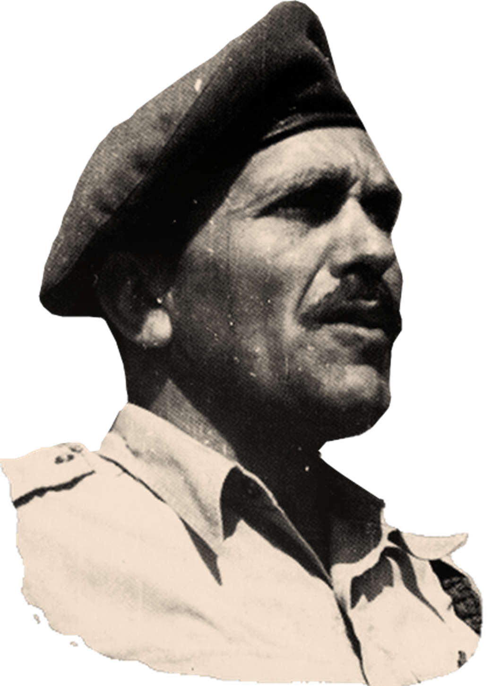

Imi Lichtenfeld serving in the IDF
- 1910Imrich (Imi) Lichtenfeld was born in Budapest and grew up in Bratislava
- 1928 Imi won the Slovakian Youth Wrestling Championship
- 1929Imi won the adult championship in the light and middle weight division. He also won the national boxing championship and international gymnastics championship. He then focussed on wrestling
- 1936-1940Fascist and anti-Semitic groups appeared and Imi became the leader of a group of young Jews to prevent these bands from entering the Jewish quarter
- 1940He left home, family and friends to board the last immigrant ship carrying refugees to Israel (then called Palestine). This was around a two year journey
- 1944Imi arrived in Israel after spending two years in the Czechoslovakian army. Here he taught self-defence using his expertise in fitness, swimming, wrestling and defenses against knife attacks. He trained several elite units, police officers and what was to become the Israeli Defense Force (IDF)
- 1948The IDF was formed and Imi was their Chief Instructor for Physical Fitness and Krav Maga at the IDF School of Combat Fitness. He served in the IDF for twenty years, developing and refining his unique method for self-defense and hand-to-hand combat
- 1964Imi retired from the IDF and continued teaching Krav Maga to civilians, law enforcement units and military applications
- 1978Imi founded the Krav Maga Association (Aguda) with several of his students to promote Krav Maga locally and throughout the world
- 1996The teaching of Krav Maga had spread worldwide and Imi formed the International Krav Maga Federation (IKMF) along with his most trusted instructors and students. It is now the largest Krav Maga organisation in the world
- 1998Imi passed away on the 9th January in hospital, a mere 5 hours after arriving there